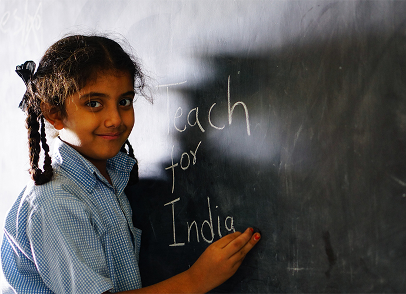

Door Step School
Focus: Primary Education
Door Step School is an NGO that focuses on providing primary education to underprivileged and marginalised sections of society. They take education right to the doorstep of these children, which are often pavements, slums or streets! They offer classes to all children between 3 – 14 years of age in flexible timings and convenient locations for the children
CRY Child Rights and You
Focus: Child Rights
CRY is an NGO that works towards children’s rights through various programs and initiatives. They have projects that deal with providing free primary education, primary healthcare, nutrition and safe houses away from violence and abuse. They do this by partnering with other grassroots NGOs and communities.
AAWC Apne Aap Womens Collective
Focus:Women Rehabilitation from Trafficking
AAWC is an NGO that focuses on rehabilitation of women and children who have been victims of prostitution and human trafficking. They primarily work with women from Kamathipura, which is Mumbai’s and in fact Asia’s largest and oldest Red Light Areas. The NGO has programs for these women and children through which they provide resources for education and job opportunities in other fields
PARYAY

Focus: Rural Empowerment
Paryay is an NGO which provides support and aid to rural communities in Maharashtra. They work on several issues and have programs running currently to address issues like Women empowerment, Rights to land, child education & rights, Village governance and Capacity building.
Teach For India

Focus:Primary Education
Teach For India is a non-profit organisation working in the educational sector aiming at removing educational inequality and is a part of the global Teach For All network. The movement works on two levels, in the short term it places TFI Fellows at local government schools for a period of two years to create impact and in the long-term, it creates a community of these fellow alumni who go on to become advocates for the movement and participate in their various roles and capacity. Interns will work in several departments towards achieving these goals.
SNEHA: Society for Nutrition, Education & Health Action
Focus:Womens Health
SNEHA is an NGO that works on the premise that investing in women’s health is essential to building urban communities. It targets four major public health care areas – Maternal and Newborn Health, Child Health and Nutrition, Sexual and Reproductive Health and Prevention of Violence against Women and Children.